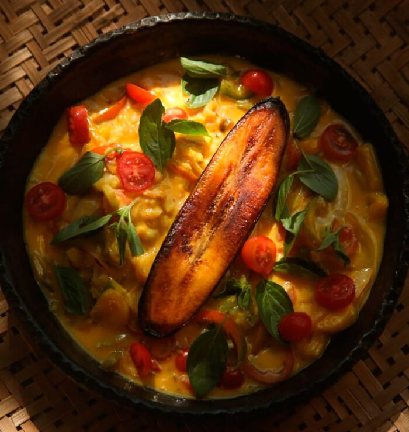

Moqueca de Catado

A moqueca de catado é um cozido de mariscos, típico da culinária baiana.
Essa moqueca é cozida em panela de barro preparada com frutos do mar como
carangueijo, siri, camarão entre outros frutos do mar.
Prato para duas pessoas.
R$ 140,00
Retornar para Cardápio